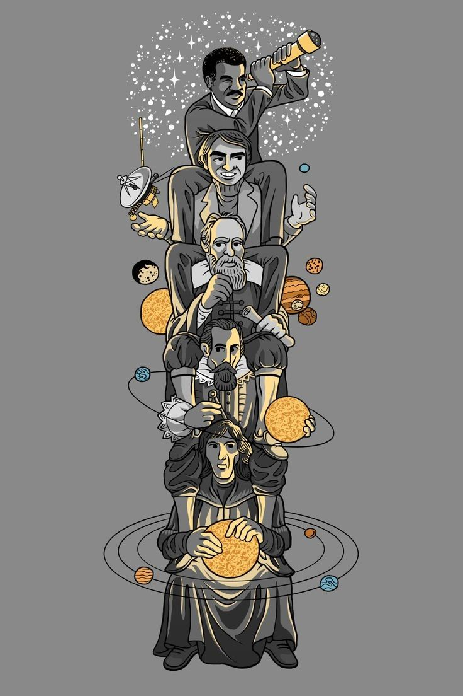
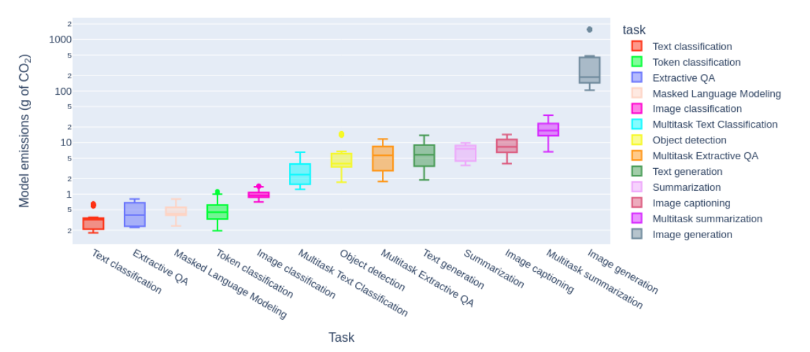
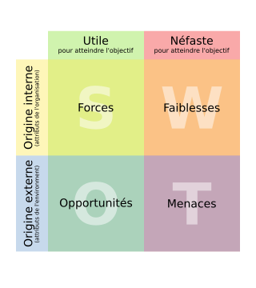

3 - Système de Veille#
🏄 Avant de Commencer#
Introduction : Aprés avoir définit notre projet, mis en place notre cahier des charges et commencer a réfléchir à nos cibles et personas, nous arrivons au chapitre important de la veille. Je vais reprendre les notions importantes du cours et plus particulièrement comment la veille peut vous être utile tout au long de votre projet.
Informations
✍ - Vincent
🚧 - En cours
🔨 - 26/11/2024
🕑 - 20 - 30 min
Objectifs Pédagogiques
Sommaire
🌐 Internet
🕸️ World Wibe Web
💻 Site Web
🛒 E-Commerce
💑 Le Consommateur
Activité A
Activité A
Syllabus
Module 4: Mettre en place un système de veille de la concurrence
Objectif global:
L’objectif global est que l’apprenant comprenne et maîtrise la mise en place d’un système de veille de la concurrence.
Plan de cours:
I. Mettre en place la veille de la concurrence :
La veille et l’information
S’organiser pour faire de la veille
Réaliser le ciblage de sa veille
Cycle de veille et recherche d’information
Fonctionnement d’un moteur de recherche sur le web
II. Les bonnes pratiques de la recherche d’information :
Rechercher des informations sur le web avec Google
Rechercher des contenus multimédias
Rechercher de l’information sur les réseaux sociaux
De l’intérêt de travailler avec des sources d’information
III. Vers l’automatisation de sa veille :
Définir ses alertes à partir de mots clés
Exploiter les flux RSS
Surveiller des pages web
Faire de la veille sur le web social
Exploiter l’information de veille
Livrables:
Avoir la méthode et les outils pour mettre en place un système de veille de la concurrence efficace
Support de Cours
Note
Pas de support de cours
Note
Pas de support de cours
🧠 La Théorie#
🔎 Recherche d’Infos#
La Recherche#
"Voir plus loin, en s'asseyant sur les épaules de géants"
On peut très bien appliquer la méthode scientifique à n’importe quelle projet. D’ailleurs dans le cadre de la formation, ça pourrait prendre la forme suiante : Décrire, pour l’instant, nous somme à l’instant crucial de la recherche. Cette étape est primordiale car elle va nous permettre de générer de bonnes hypothèses. Il est important de faire des bonnes hypothèses sinon il faut repartir du début.

Source - De bas en haut, Nicolas Copernic, Johannes Kepler, Galilée, Carl Sagan, Neil Tyson De Grass#
Grâce à la Méthode Scientifique
Avant de rentrer dans le vif du sujet j’aimerai vous introduire à un concept qui m’est chère, la méthode scientifique, représenté par le diagramme ci-dessous.
La Science du e-commerce ?
Note
Intégrer les dernièrs sujet de recherche du e-commerce
Appliqué à notre projet
✅ Ce que l'on vient de faire
l’analyse préliminaire du contexte : comprendre l’environnement, le secteur, les tendances et les comportements des consommateurs.
Note
Lien vers les deux chapitres précédents
📍 Ce que l'on doit faire maintenant
expliquer
expliquer
expliquer
expliquer
D’informations#
C'est quoi une information ?
Note
Insérer présentation c’est quoi une information
Une donnée devient une information quand on lui donne un sens. Cette information devient une connaissance quand on l’intègre à notre savoir pour prendre une décision ou comprendre quelque chose de plus large.
Se poser les bonnes questions !#
La veille est un outil que l’on met en place pour s’informer des tendances en cours (dans l’instant présent - d’où l’intéret de la faire de manière régulière, ou de l’automatiser) et prendre des meilleurs décisions pour le futur. mais nous ne sommes pas encore des chefs d’entreprises accomplie à la conquette des marchés … Je vous propose donc de faire un petit pas en arrière:
Interrogeons nous donc de manière générale sur notre marché (définie en Section 2 ), pour afiner la définition de nos cibles et construire des personas cohérentes (définies dans la Section 3 ).
Quelques examples#
Taille du marché
"Quelle est la taille du marché mondial pour [ton produit/service] en 2024 et sa croissance prévue d'ici 2028 ?"
Tendances du secteur
"Quelles sont les principales tendances du marché pour [ton secteur] dans les cinq dernières années ?"
Concurrence
"Quels sont les principaux acteurs du marché dans le secteur de [ton produit/service], et quelle est leur part de marché respective ?"
Comportement des consommateurs
"Quels sont les comportements d'achat des consommateurs pour [ton produit/service] dans [ton pays] ?"
Analyse démographique
"Comment les consommateurs pour [ton produit/service] se répartissent en termes de démographie ?"
Barrières à l’entrée
"Quelles sont les barrières à l'entrée pour un nouveau produit/service dans [ton secteur] en 2024 ?"
Et bien plus encore …
Il faut continuellement se poser des questions,
Oui c’est très important de se poser des questions
Car à l’examen on vous en posera beaucoup !
Pendant l’examen, le jury vous demandera de justifier vos choix ! (pourquoi avez vous choisi cette cible …). Avoir réaliser en amont un travail de questionnement vous aidera à aborder ces questions avec sérénité
Une Bonne Information#
Pertinence#
Une bonne information, c’est avant tout une information qui apporte une réponse a la question que l’on se posait à la base
La Source#
Note
Introduire l’image du cours que j’ai réalisé
Introduire Paragraphe IA
La Date#
En effet, le monde évolue, et une information peut être vrai à l’époque ou elle a été énnoncé mais plus vrai aujourd’hui pour plusieirs raisons :
evolution de la loi …
Pour Quoi Faire ?#
Prendre de Bonnes Décision#
Note
insérer vidéo esprit critique
Des Hypothèses Solides#
Note
Expliquer pourquoi il est important de bien connaitre son environnement pour prendre de meilleurs décisions
Introduire section Biais cognitifs
Contrer nos Biais Cognitifs#
Note
Expliquer pourquoi il est important de bien connaitre son environnement pour prendre de meilleurs décisions
Introduire section Biais cognitifs
Créer des personas à la va-vite, c’est un peu comme partir en randonnée avec une carte dessinée à la main : on croit savoir où on va, mais on risque de se perdre en chemin. Sans prendre le temps d’analyser correctement les cibles, on s’appuie sur des intuitions qui semblent solides mais qui peuvent être complètement à côté de la plaque. Résultat : des personas qui ne ressemblent pas vraiment aux utilisateurs réels, souvent parce qu’ils sont influencés par des biais cognitifs qu’on n’a même pas conscience d’appliquer.
C’est quoi un biais cognitif ?
Les biais cognitifs sont des distorsions dans le traitement de l’information par notre cerveau, qui peuvent nous amener à des jugements ou des décisions irrationnelles.
Biais d’attention sélective : Tendance à se concentrer sur certaines informations tout en en ignorant d’autres, souvent en raison de leur saillance.
Biais de confirmation : Recherche, interprétation ou mémorisation d’informations qui confirment nos croyances, tout en ignorant celles qui les contredisent.
Effet de halo : Tendance à juger positivement ou négativement une personne ou une chose sur la base d’une seule caractéristique (ex. : une personne sympathique est automatiquement perçue comme compétente).
Biais de mémoire sélective : Rappel préférentiel d’événements ou d’informations en accord avec nos croyances ou émotions.
Biais d’ancrage : Dépendance excessive à la première information reçue (l’ancre) pour prendre une décision.
Et plus encore !
Aiguiser l’Esprit Critique#
Comment est-ce qu’on aiguise son esprit critique ?
💡 La Veille#
Définition#
👉 La veille consiste à surveiller, collecter et analyser régulièrement des informations sur un sujet précis. Elle sert à rester informé des nouveautés, des tendances ou des évolutions qui pourraient être utiles pour prendre de meilleures décisions.
Exemple
Une entreprise fait de la veille pour savoir ce que font ses concurrents, découvrir de nouvelles technologies ou comprendre les besoins de ses clients.
En résumé
C’est une activité pour rester à jour et anticiper grâce à des informations pertinentes et actualisées.
Quelles Informations ?#
En fonction des besoins que l’on a briêvement abordé plus haut, il existe plusieurs types de veille, que l’on regroupe en plusieurs catégories.
Types de Veille par Vdeguin
⚙️ Méthodes#
Surveiller#
Pour surveiller il faut déja avoir une piste, et pour trouver des piste il faut commencer à chercher.
Marché
Concurrents
Utilisateurs
Société
Technologies
Note
Ancrer vers différents exercices ou questions en lien avec le bordel
Collecter#
Nous sommes aujourd’hui submergé par l’information. Le plus gros de l’effort va se trouver dans la sélection et dans la capacité d’analyse de la source d’information dont la pertinence devra être mise au premier plan
Quels outils ?#
Internet bien sûr !
Bonnes pratiques de la recherche sur internet
bookmarks …
S’abonner
Suivre des profils intéréssants
webinaires
L’Intelligence Artificielle#
Attention avec l’IA. Ca va venir rajouter des gouttes dans un monde ou l’on est déja submergé d’infos
Chat GPT
ChatGPT est un outil puissant pour synthétiser et expliquer rapidement des informations complexes, rendant la recherche plus rapide et accessible. Il peut aider à clarifier des sujets, explorer des idées ou fournir des pistes initiales. Cependant, il est essentiel de vérifier les informations qu’il fournit : bien qu’il s’appuie sur de vastes bases de connaissances, il peut parfois générer des réponses inexactes ou approximatives. Utilisez-le comme un point de départ, mais complétez par des sources fiables pour garantir la précision de vos recherches.
Le problème de ChatGPT est qu'il ne cite pas ses sources !
Perplexity est un outil de recherche assistée par IA conçu pour fournir des réponses claires et précises à vos questions, tout en s’appuyant sur des sources qu’il cite directement. Il combine la rapidité de l’IA et la transparence des références, ce qui le rend idéal pour explorer des sujets ou valider des faits. Toutefois, comme pour tout outil, il est important de croiser les informations et de vérifier la fiabilité des sources fournies pour assurer une recherche rigoureuse.
Attention quand on utilise l’IA !
Je ne peux que vous recommander de vérifier ce que vous dit l’IA.
De plus (et on y pense pas forcément) ca consomme beaucoup d’énergie!

La consommation (en gramme de Carbonne) de l’IA générative Source: DataforGood#
Analyser#
L’analyse, c’est plus compliqué. C’est traiter l’information pour savoir comment l’utiliser dans son projet. On en reparlera un peu plus tard dans la partie méthode
Surveiller#
Méthodes Push / Pull#
Il existe deux grandes méthodes de veille, les méthodes Push and Pull (Pousser ou Tirer en anglais).
Note
Créer un questionnaire H5P (ou interactivité Genially ?) - pour demander a l’utilisateur de choisir entre les deux ?
PULL
C'est quand vous allez chercher l'information.
L'utilisateur doit effectuer une démarche active pour trouver les données qui l'intéressent.
PUSH
C'est quand l'information vient à vous.
Les informations sont directement envoyées à l'utilisateur sans qu'il ait besoin de les chercher.
Automatise ta Veille#
Jusqu’ici on a vu des outils pour aller chercher de l’information (méthode pull), très importante en début de projet. Cependant, pour continuer à rester informé (sans y passer trop de temps non plus), automatisons tout ça !

{kind=link}
{kind=link}
{kind=link}
{kind=link}
{kind=link}
{kind=link}
{kind=link}
{kind=link}
{kind=link}
Comparaison entre les différents outils de veille automatique
Note
Insérer image
On y pense pas assé mais les newletters sont un outil très performant pour automatiser votre veille. Il faut en revanche avoir fait un travail important de recherche en amont pour sélectionner les sites leaders dans votre secteur.
Note
Comment les mettre en place
Intérroge ta cible !#
C'est la source d'information la plus directe, et celle sur laquel vous avez le plus de controle !
Les Outils de questionnaires#
{kind=link}
{kind=link}
{kind=link}
Comparaison entre les différents outils de questionnaire
Pourquoi le choisir :
Gratuit et illimité : Permet de collecter autant de réponses que nécessaire.
Facile d’utilisation : Interface intuitive, idéale pour créer des questionnaires rapidement.
Analyse intégrée : Les réponses sont automatiquement organisées dans des graphiques et peuvent être exportées vers Google Sheets pour une analyse approfondie.
Limites :
Moins de personnalisation visuelle et absence de fonctionnalités avancées comme la logique conditionnelle complexe.
Pourquoi le choisir :
Expérience utilisateur fluide : Design interactif et attrayant, engageant pour les répondants.
Facile à utiliser : Interface conviviale pour la création de questionnaires esthétiques.
Logique conditionnelle : Permet une navigation dynamique en fonction des réponses.
Limites :
Limité à 10 questions et 10 réponses par mois dans la version gratuite.
Pourquoi le choisir :
Professionnel et fiable : Reconnue pour sa robustesse dans les études de marché.
Personnalisation : Offre des modèles de questionnaires adaptés à différents secteurs.
Logique conditionnelle (basique) : Possibilité d’afficher des questions en fonction des réponses.
Limites :
La version gratuite est limitée à 10 questions par enquête et 100 réponses par questionnaire.
Bonnes pratiques quand on créé un questionnaire
Créer un questionnaire efficace nécessite de suivre plusieurs bonnes pratiques pour garantir des réponses pertinentes et exploitables. Voici les principales :
1. Définir clairement ses objectifs
Identifiez les informations précises que vous souhaitez recueillir.
Formulez des objectifs clairs : quelles décisions l’étude de marché va-t-elle éclairer ? (ex. : évaluer la demande, comprendre les préférences clients).
2. Connaître sa cible
Adaptez le ton, la langue et le niveau de détail au profil des répondants.
Assurez-vous que les questions sont compréhensibles pour votre audience cible.
3. Structurer le questionnaire de manière logique
Commencez par des questions simples pour mettre les répondants à l’aise.
Placez les questions plus complexes ou sensibles vers la fin.
Terminez par des questions facultatives ou ouvertes pour recueillir des idées complémentaires.
4. Utiliser un langage clair et précis
Évitez les termes techniques, ambigus ou les formulations complexes.
Posez une seule question à la fois : privilégiez des questions directes et courtes.
5. Privilégier des questions fermées (mais pas exclusivement)
Les questions à choix multiples sont plus faciles à analyser : par exemple, « Quelle est votre tranche d’âge ? ».
Ajoutez des options telles que « Autre : précisez » pour les réponses ouvertes si nécessaire.
6. Utiliser des échelles avec cohérence
Si vous utilisez des échelles (ex. : de 1 à 5 pour évaluer une satisfaction), gardez les mêmes formats tout au long du questionnaire pour éviter de perturber les répondants.
Soyez explicite sur le sens de l’échelle : par exemple, « 1 = Pas du tout satisfait, 5 = Très satisfait ».
7. Garder le questionnaire court et engageant
Limitez le nombre de questions : les questionnaires trop longs découragent les répondants.
Annoncez le temps estimé au début (idéalement 5 à 10 minutes maximum).
8. Éviter les biais dans les questions
Pas de questions orientées : « Pourquoi pensez-vous que notre produit est le meilleur ? » pourrait influencer la réponse.
Proposez des options équilibrées pour les réponses (ex. : « Très satisfait, Satisfait, Neutre, Insatisfait, Très insatisfait »).
9. Tester le questionnaire
Faites un test auprès de collègues ou d’un petit groupe de personnes représentatives de votre cible.
Vérifiez que les questions sont claires et qu’elles recueillent les informations attendues.
10. Assurer la confidentialité et encourager la participation
Indiquez comment les données seront utilisées (ex. : « Vos réponses resteront anonymes »).
Si possible, offrez une incitation (ex. : un tirage au sort ou un accès à une synthèse des résultats).
J’ai créé ce site sans forcément prendre le temps de receuillir vos besoins (il faut dire aussi que vous êtes mes cibles secondaire, la cible principale étant moi même (on en reparlera)). Permettez moi cependant de réparer cette erreur en vous proposant un petit questionnaire (à titre d’exemple) pour mieux comprendre votre ressenti vis a vis de la formation ainsi que les besoins que vous pourriez avoir.
Cliquez sur le bouton ci-dessous pour accéder au questionnaire
Collecter#
Utilise ton tableau de veille#
Quand une information te parvient, et si elle te semble pertinente, inscrit la dans ton tableau de veille !
Une alerte google peut nous parvenir par mail à tout moment (c’est son but, de nous alerter lorsqu’une nouvelle information est disponible). En revanche, il n’est pas recommandé de stopper immédiatement l’action qu’on est en train d’effectuer pour traiter cette info. C’est en cela que le tableau de veille est utile, pour stocker l’information en attendant que vous ayez le temps de la traiter
Tableau de veille
.svg.png)
Domaine par Vincent Deguin
Analyser#
Comment#
L’analyse, c’est un processus qui comprend plusieurs étapes résumé dans le diagramme ci dessous
Le diagrammme suivant représente les différentes étapes nécéssaires a l’analyse d’une information
🔎 Cas d’Usages#
Etude de Marché#
Objectifs#
Note
Expliquer comment on fait une étude de marché
lien vers activité SWOT
Appliquons ce que l’on
Etapes#
💪 Trouver des Sources
Business Model Canva#
Matrice SWOT#
Note
En fonction des resultats de ta veille tu vas voire émerger des opportunités ou des menaces, qui peuvent venir nourrir ton analyse SWOT (déja débuté au Chapitre 2 ?)
{kind=link}

La matrice SWOT#
💪 A - Créé un SWOT
SWOT - faire un lien vers l’activité - lien vers un template Canva ?
Activité A
🕑 20 min
🍅 0
Veille Concurrentiel#
💪 Mise En Pratique#
Quelles Questions !?#
Note
Décrire l’exercice ! réalisé pendant le cours de veille avec la CDP3
📈 Pour Finir#
En résumé#
Examples de bonnes veille#
En Plus#
Une Veille Collective ?#
Et oui ! Pourquoi on mettrait pas en place un outil pour faire une veille collective ?
Note
Présentation de l’outil discord et explication de comment on peut nourrir cette plateforme grace aux découvertes de chacun.e
Example#
Avec Laszlo, nous avons mis en place une veille collaborative grçace à l’outil padlet
To Do
Impliquer les apprenants dans la création d’une veille collective !
Créer un padlet par section (épinglé)
Autres Ressources#
Note
Au programme du Master donc faire le lien quand ce dernier sera créé
Note
Outil de recherche visuelle, lié avec le chapitre charte graphique pour le moodboard
Chaines Youtube#
Testez-vous !#
Note
Embed ce questionnaire : Questionnaire veille
Outils#
Note
Outil de recherche visuelle qui produit un type de moodboard !
Open Source#
Veille technologique#
Articles Scientifiques#
Note
A inclure quelque part dans le cours - décrire ce que l’on trouve dans l’article (traduction de l’abstract)